37 Gods, Demons, and other Immortals
Gods

In the dawning of time, when the dreams and aspirations of mortals were still young and untempered, vast and potent energies stirred beneath the surface of the world. These High Points, as they came to be known, thrummed with the raw pulse of creation, shifting and growing in harmony with the ever-flowing tides of magic. Their forms twisted and reshaped themselves, ever adapting to the capricious currents of arcane force that surrounded them.
In time, some of these ancient structures—so saturated with power—began to stir with a nascent awareness. The fervent prayers and devotions of mortals, drawn to these immense wells of energy, breathed life into them. From the depths of mortal belief—shaped by dreams, fears, and desires—a consciousness arose: a sentience born of arcane essence. Wild, raw potential coalesced and became focused, shaping itself into twelve beings, each embodying a unique facet of humanity’s soul.
These entities, known as the Arcane Siblings, were not born of divine or celestial origin, but from the tangled knot of human will and the untamed magical forces that answered it. As eternal and vast as the forces that birthed them, they bore within themselves the flaws and frailties of their makers. Though wise beyond measure and powerful beyond mortal comprehension, they were still haunted by the same imperfections—the same longings and fears—that had given them form.
Antru
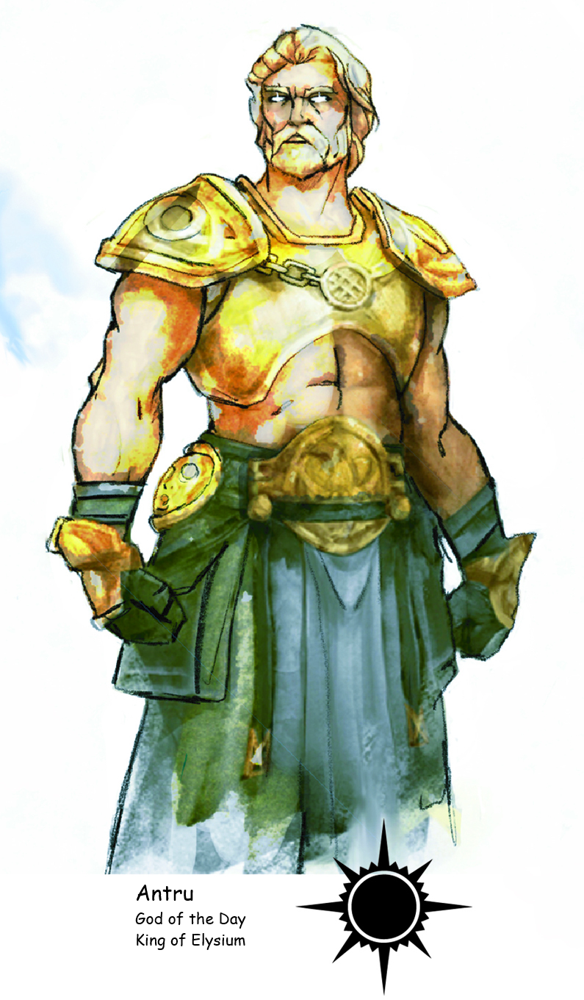
| Patron God of: Solandi | Month: June | Color: Yellow |
| Holy Symbol: The Sun | Holy Day: Antruna (Summer Solstice) | Dragon: Gold |
Behold Antru, god of the Day, whose very presence ignites the skies with a golden blaze, heralding the dawn of each new day. Crowned King of Elysium, he reigns over a realm where eternal sunlight bathes fields of celestial splendor. His divine mandate resonates with the warmth of compassion and the courage to defy darkness.
Patron of Solandil, Antru’s essence is embodied in the radiant sun, a symbol of unyielding hope and life-giving energy. In the month of June, when fields bloom in hues of yellow, his influence is most potent, infusing the world with vitality and abundance.
His followers, clad in robes as bright as the midday sun, embody his teachings of generosity and kindness. Paladins and rangers—champions of justice and protectors of nature—stand as his devout warriors, wielding his divine light against injustice.
Antru’s benevolence extends to the bountiful harvests of the earth, where he ensures fields flourish and herds thrive under his watchful gaze. Yet amidst his majesty, whispers speak of moments when his attention strays, lost in the celestial tapestries of Elysium.
At the heart of Solandil, in the city of Sunport, Alexander the Good leads the faithful of Antru, guiding their prayers and deeds toward the greater good. Together, they strive to bring solace to the suffering and to sow seeds of kindness in barren lands.
Antru’s holy day, called Antruna, falls on the summer solstice—typically between June 20th and June 22nd, depending on the year. It celebrates the longest day of the year, marking the height of summer’s warmth and vitality. Across the lands, people gather to honor Antru with feasts, contests of skill and bravery, and sacred ceremonies that seek blessings for abundant harvests and protection against adversity.
Brigit
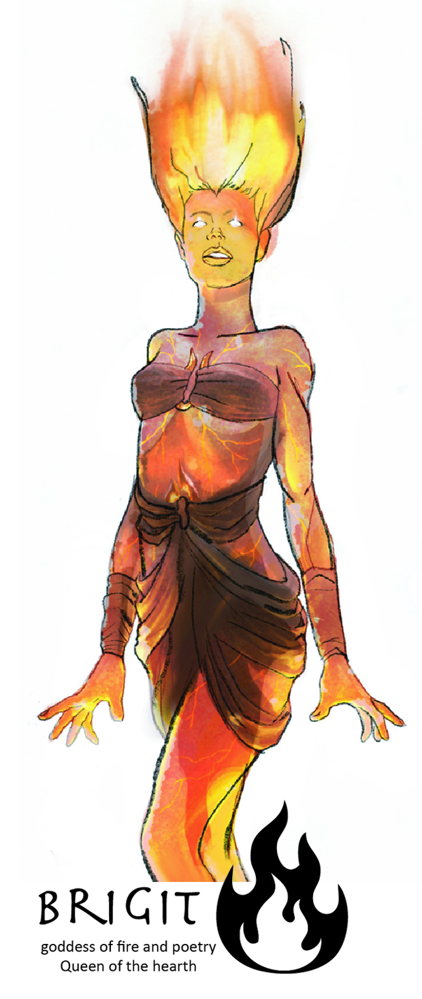
Goddess of Fire and Poetry, Queen of the Hearth Also known as Vesta, Hestia, Sol, and Ney-An (Elven) Patron Goddess of Nyrond
Holy Symbol: The Flame
Month: August
Color: Orange
Demigoddess: Demeter, demigoddess of the harvest and rebirth
The fire goddess Brigit at times appears as bathed in divine flames. To the people of Nyrond, she represents the fire used to light the way, warm the home and cook meals. Brigit is also a fierce warrior and the protector of the family and the community. Bards have found particular interest in this goddess and Brigit is known to show favor to any who compose a beautiful poem or song in her name. The clerics and followers of Brigit adorn themselves with bronze jewelry. The Matriarch of the Church of Brigit is Lady Gabála Érenn in Nyr’s Gate of Nyrond. Brigit’s avatar is Demeter, demi-goddess of the harvest and rebirth.
Curumo
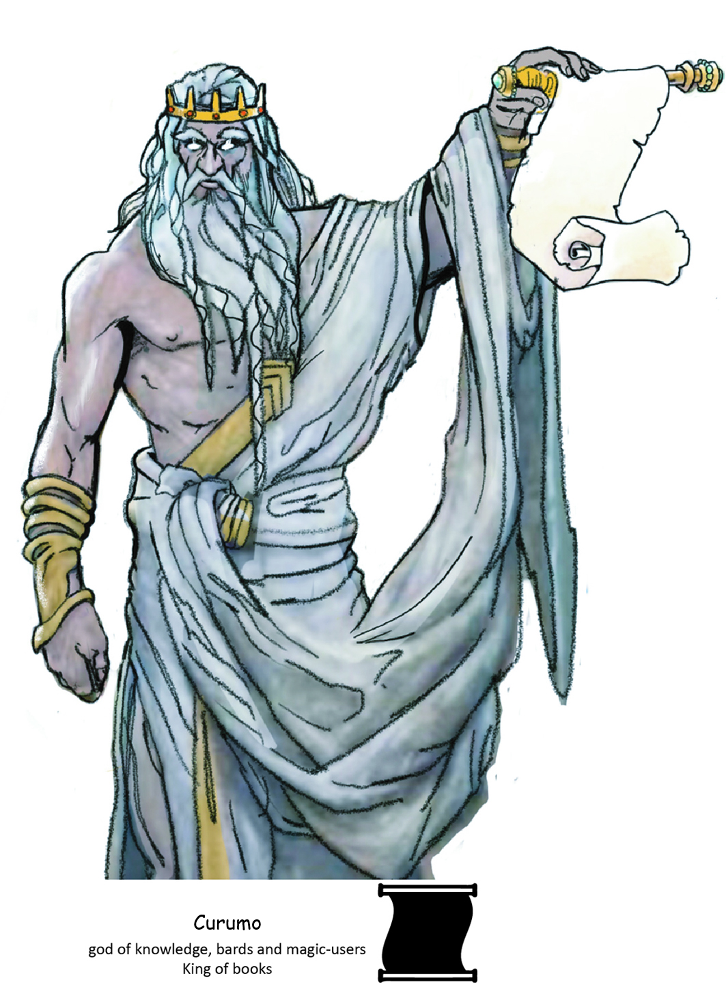
| Patron God of: Arcanum | Month: December | Color: Brass |
| Holy Symbol: The Scroll | Holy Day: Arcane Revelry (December 24th) | Dragon: Brass |
Curumo, god of knowledge, arcane mastery, and wisdom, embodies humanity’s boundless curiosity and relentless pursuit of understanding. He is often depicted as a tall, imposing figure with a flowing white beard and a crown of brass—symbol of his dominion over intellect and magic.
It is said Curumo’s hunger for knowledge is as infinite as the cosmos. Legends tell that he has read every tome ever penned, absorbing the universe’s secrets like a sponge drinks the rain. No spell lies beyond his grasp, no mystery remains unsolved. He is the master of all things arcane, the keeper of forgotten lore, and the unraveling of impossible truths. His wisdom transcends time and space, and it is whispered among scholars and mages that those favored by Curumo are granted visions of truths so profound that even the mind of a god might tremble.
Clerics of Curumo form an esteemed and scholarly order. Their robes are embroidered with brass, adorned with tokens that reflect their devotion. But they are not merely religious leaders—they are educators, archivists, and custodians of civilization’s knowledge. They preserve ancient tomes and pass down the god’s teachings across generations. To be in their presence is to stand at the threshold of revelation, for they are the living vessels of Curumo’s eternal pursuit.
Temples devoted to Curumo are sacred havens of study. Within their vast libraries and lecture halls, the pursuit of knowledge is itself an act of worship. Magic flourishes under the god’s unseen gaze, and within these walls, scholars push the boundaries of the known. It is said that those who seek truth with pure intent may, in the quiet of Curumo’s halls, glimpse answers to the world’s deepest questions.
At the heart of his worship lies Arcanum City, capital of the Magocracy of Arcanum, where the Church of Curumo is led by the venerable Garfield the Enlightened. Both sage and spiritual guide, Garfield embodies the divine spark of his patron—a mind as sharp as any blade, a soul illuminated by cosmic wisdom. Under his guidance, Curumo’s temple stands as both beacon and sanctuary. In Arcanum City, the god’s teachings are not merely venerated—they form the very foundation of society. Magic, knowledge, and reason are its guiding lights, and Curumo’s name is etched into every stone, spell, and scholarly pursuit.
Dobhainn
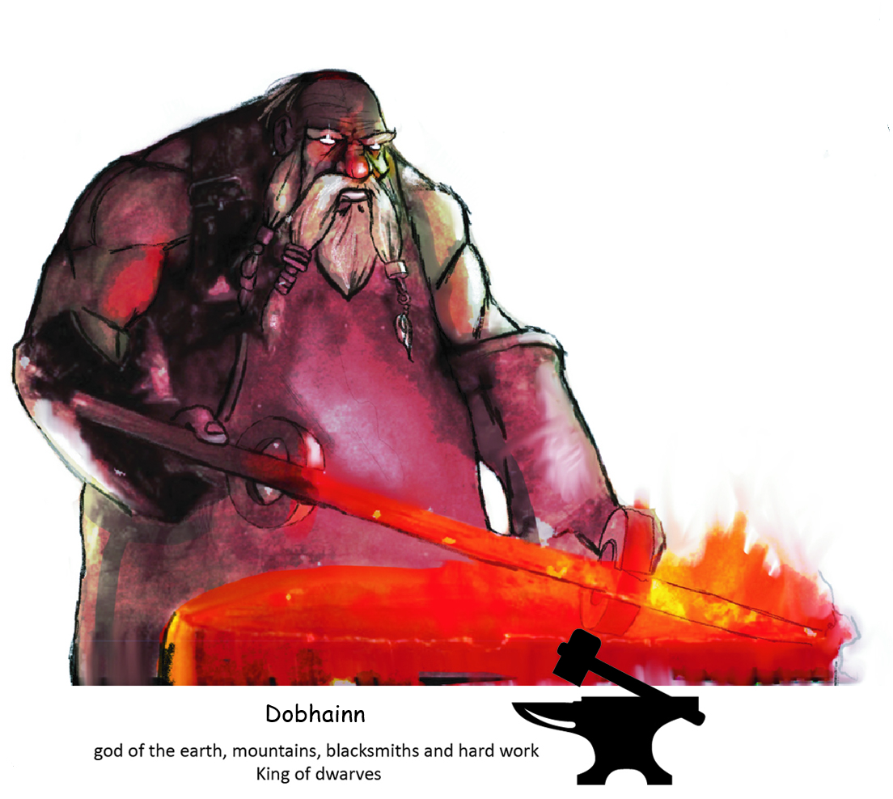
| Patron God of: Ringinghammer | Month: September | Color: Grey |
| Holy Symbol: The Anvil | Holy Day: Forgefest (September 30th) | Dragon: Iron |
Dobhainn rose from the bones of the world. He is the embodiment of unyielding strength, enduring resilience, and the stoic might of stone. Where others bend or break, Dobhainn stands—immovable and eternal. In the realm of OnceWas, his presence is tied to the land itself, to the ancient mysteries buried deep beneath the surface and the treasures that slumber within the earth’s embrace.
He is said to dwell within the Great Mountain of the Elemental Plane of Earth, a place of endless stone and silent majesty. There, amid the crushing pressure and eternal stillness, Dobhainn keeps his vigil—watching over the secrets of the deep and listening to the slow, patient song of the world.
Among his most devoted are the Hammers of Dobhainn, a militant order forged in stone and battle. Crusaders and battle-hardened clerics alike fill their ranks, sworn to defend the dwarven realms and the hidden places beneath the mountains. With warhammers in hand and oaths etched into steel, they stand as bulwarks against the encroaching dark—whether it comes as marauding hordes, ancient dragons, or the infernal spawn of the deep. Their deeds echo through dwarven halls, sung in low voices around hearthfires and carved into the walls of stone temples.
Clerics of Dobhainn wear thick leather bracers set with heavy iron rings, symbols of the god’s enduring might and their solemn duty to guard the earth’s riches and truths. Their rites are slow and powerful—prayers murmured through stone corridors, invocations that ripple through rock, calling upon their god’s strength to guide their hands, fortify their spirits, and shield their kin.
At the heart of Ringinghammer, the City Under the Mountain, stands the Church of Dobhainn, presided over by Prelate Durgari Rockbrow. Wise and immovable as the mountain he serves, Durgari ensures that the ancient ways endure. Under his guidance, the faithful gather in solemn reverence—not only to venerate their god, but to uphold a legacy of patience, strength, and unshakable purpose. In their worship, the earth is honored not merely as soil and stone—but as sacred foundation, keeper of secrets, and eternal witness to all things that rise and fall.
Enki
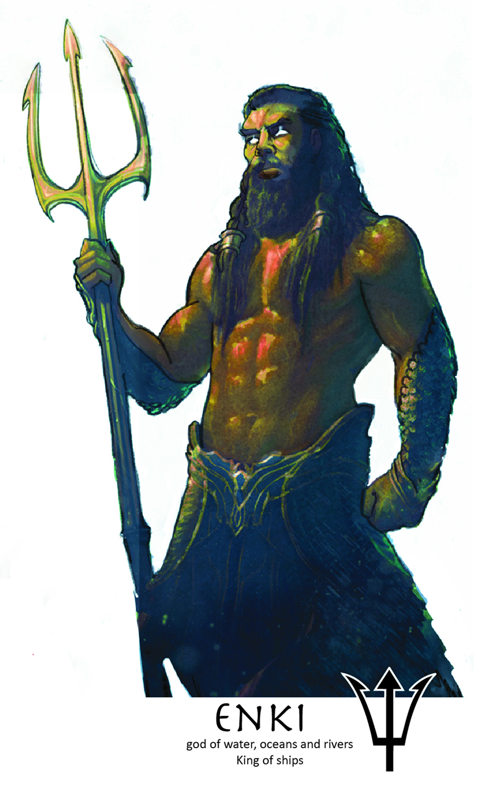
God of Water, Oceans, and Rivers, King of Ships Also known as Rán (Elven), Khnum (Dwarven), Njǫrd (Northern), Oceanu Patron God of Isigir
Holy Symbol: The Trident
Month: July
Color: Teal
Demigoddess: Uinen, demigoddess of merchants
Enki is the deity of waters and worshiped by sea-faring people of Isigir, often looking kindly on these people. However, like the sea, Enki can be a fickle god. This deity is very volatile, temperamental, and prone to rage. He is known to express his displeasure through extreme acts, such as flattening coastal cities with earthquakes or flooding them. The clerics of Enki wear blue and teal tunics. The Lord Patriarch of the Church of Enki is Fernández of in Umbar of Isigir. Enki’s avatar is Uinen, the dancing goddess, demi-goddess of merchants.
Enlil
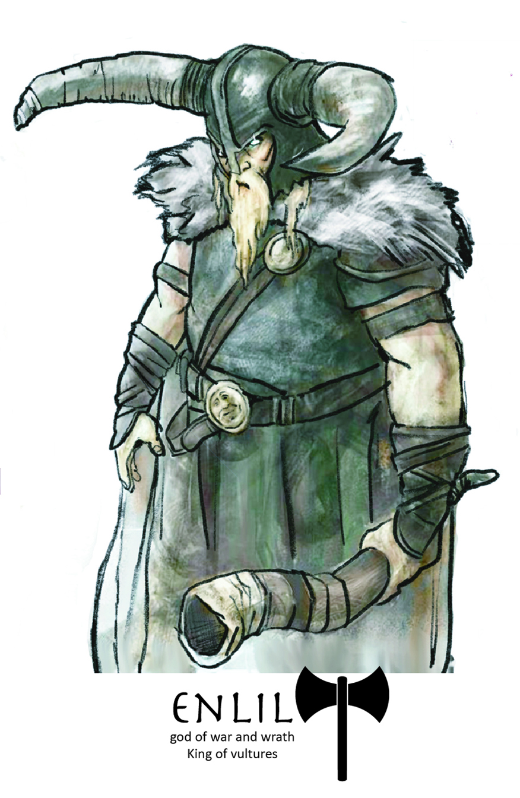
God of War and Wrath, King of Vultures Also known as Tyr (Northern), Montu, Kratos (Dwarven) Patron God of Stone Hold
Holy Symbol: The Axe
Month: February
Color: Red
Demigoddess: Lovitar, demi goddess of love and pain
Enlil most often appears as a burly man in a horned helm. He wields a viscous axe and holds a massive battle horn. Enlil is a being of chaos, distributing his favor randomly. Such is the nature of war that he might side with one army one day and turn against them the next. He is not heartless, however, but exuberant, and said to live only for excess, whether it be love for food, drink, hunting, or his greatest passion, battle. His priests often have a quick temper and never forget a slight. The barbarian clerics of Enlil paint their faces green and paint their battle armor red. The High Priest of the Holy Place of Enlil is the mighty Seiðr of the Maul of the gods in Stone Hold. Enlil’s avatar is Lovitar, demi-goddess of pain.
Gaoth
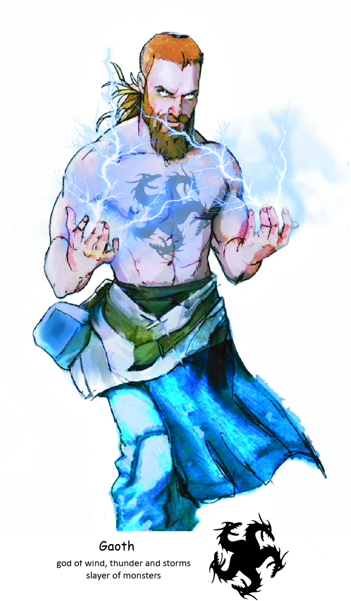
| Patron God of: Dunmar | Month: April | Color: Blue |
| Holy Symbol: Platinum Dragon | Holy Day: Stormbreaker’s Day (April 5th) | Dragon: Platinum |
Gaoth, the Stormlord, the Wind-Father, the Thunderbringer—his name is woven into legend, echoing through the ages like the roiling winds that herald a tempest. He is god of the boundless sky, of winds that sweep the earth, of thunder’s mighty voice and the storms that tear the heavens asunder. In the elder days, when the world was young and the air thrummed with untamed power, Gaoth stood as both protector of the light and scourge of darkness. His name is forever bound to the fall of Xalara, Queen of Dragons, and the end of the Dragon Wars.
It was on the hill where now stands the city of Realm’s End that Gaoth and Xalara clashed. The storm howled and the heavens trembled as wind and thunder met claw and flame. At last, with a cry that split the skies, Gaoth struck down the dread goddess of avarice. Her death cursed the land, her blood sinking deep into the soil, staining it with ancient malice.
The origin of the Stormlord is sung in the old songs of Dunmar, whose people speak of his arrival from the Stormspire Peaks, where the skies reign supreme and the winds never sleep. There, amidst jagged heights and endless gales, Gaoth first manifested—his form a living tempest, his eyes like the clear calm after the fiercest squall. From those sacred peaks he descended into the world of OnceWas, bringing with him the breath of the storm and the promise of change. Today, the Stormspire Peaks remain a place of pilgrimage for his faithful, who climb its paths to feel his presence in the howl of the wind.
The clergy of Gaoth wear robes traced with platinum, its bright gleam a symbol of resolve and unyielding strength. Their hearts are steadfast, their will unshaken, for their faith is forged in stories of divine valor. In Gaoth’s triumphs over darkness, they find guidance; in his thundering wrath, they find justice. When doubt howls and fear looms, the priests of Gaoth stand resolute—upholding the virtues of courage, righteousness, and perseverance.
In the province of Griffindale, the Church of Gaoth is led by Patriarch Wilam Menliam, a man of quiet strength and enduring faith. Wise and steady, Menliam shepherds his flock with the same patience and purpose found in the eye of the storm. Under his leadership, the faithful gather to honor their god, remember his ancient victories, and seek his guidance in their own trials of spirit and steel.
To those who follow Gaoth, his name is more than divine—it is a promise. A promise that every storm will pass. That the winds will carry them forward. That the thunder of justice will one day shake the world. Gaoth is not a distant god upon a lonely peak, but a living force—present in the rush of wind, the crack of storm, and every triumph of good over evil.
Grund-Wyren
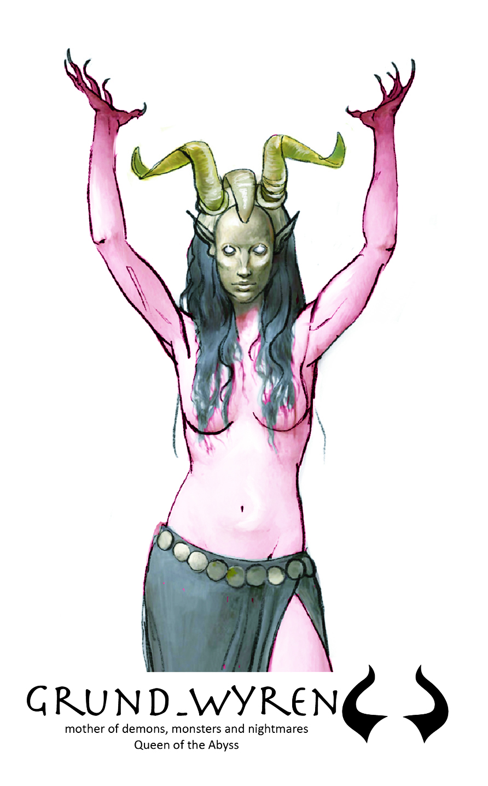
| Patron God of: Orckrag | Month: March | Color: Dark Green |
| Holy Symbol: The Demon Face | Holy Day: Abyssal Descent (March 3rd) | Dragon: Red |
Grund-Wyrgen, the Dread Sovereign, embodies the deepest fears and darkest nightmares that haunt mortal minds. Born from the shadows that dwell within the deepest recesses of consciousness, she is revered as the mother of nightmares, monstrous aberrations, and the chilling terrors that lurk in the darkness.
Secluded from the pantheon of OnceWas and Elysium, Grund-Wyrgen harbors a profound disdain for the other gods, choosing instead to reign supreme in the Abyss, where darkness holds sway. Her realm is a bastion of chaos and malevolence, where the abyssal depths echo with the agonizing screams of mortals lost to their worst fears.
Clerics devoted to Grund-Wyrgen are enigmatic figures, shrouded in mystery and draped in robes of dark green, symbolizing the depths of terror. They wear white masks that conceal their identities, their faces forever hidden as they invoke their mistress’s terrifying influence. Scarification rituals mark their flesh, serving both as a testament to their devotion and as conduits for the dark powers they wield.
In the ominous city of Vornthol, nestled deep within the foreboding realm of Orckrag, Master Aakil holds the esteemed position of High Priest at the Temple of Grund-Wyrgen. Under his sinister guidance, the faithful pay homage to the Dread Sovereign through rites that evoke both fear and reverence. These rituals channel Grund-Wyrgen’s malevolent energies, spreading chaos and despair throughout the mortal realms.
Grund-Wyrgen’s dominion over nightmares and monsters makes her a queen of terror, her influence extending far beyond the mortal realm. Her holy symbol—the twisted visage of a demon’s face—strikes fear into the hearts of mortals who dare to utter her name. Her holy day, Abyssal Descent, observed on March 3rd, is a time of dread and foreboding, when her malevolent presence is felt most keenly across OnceWas.
In defiance of the light and order upheld by the other gods, Grund-Wyrgen stands resolute in her allegiance to chaos and darkness. Her followers, bound by shadow and steeped in the mysteries of terror, perpetuate her legacy through rituals that invoke nightmares and sustain the eternal darkness of the Abyss.
Clerics of Grund-Wyrgen suffer a –1 penalty to Charisma due to the unsettling aura of dread that surrounds them.
Ki
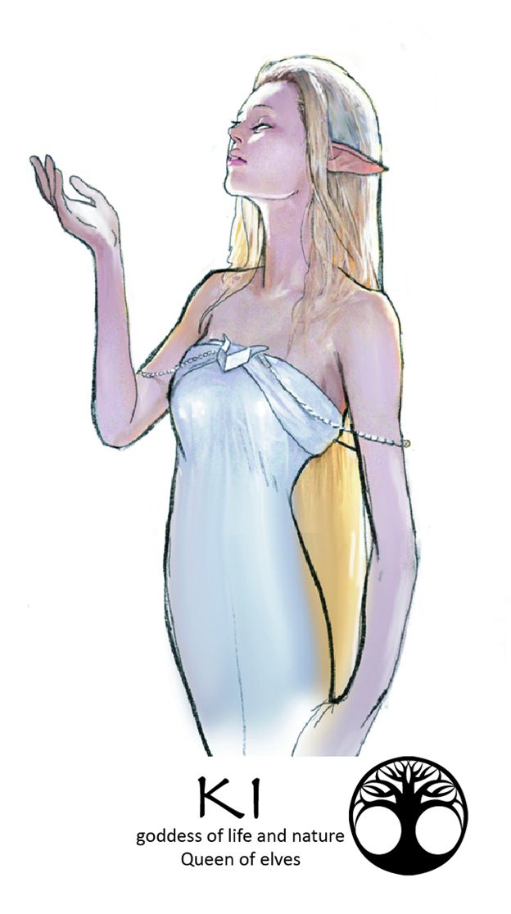
Goddess of Life and Nature, Queen of Elves Also known as Yggdrasil (Northern), Joro, Gaia, Sehanine (Elven) Patron Goddess of Imladris
Month: May
Color: Light Green
Demigod: The Green Man, demigod of woods, nature and giants
The goddess Ki is a radiant being revered by the fey. Elves, druids, and rangers also follow Ki’s teachings. She is protector of the forest, flowers, and wild animals, and they obey her commands. Ki travels freely to the Feywild. She also spends time in both the OnceWas and Elysium. Ki is calm, soothing and graceful, but is also capable of vicious savagery. The clerics of Ki adorn themselves with silver jewelry. The High Priestess of the Temple of Ki is Her Grace Lady Yaereene Lightbringer of Imladris. Ki’s avatar is the Green man, demi-god of woods, nature, and giants.
Nanna-Sin
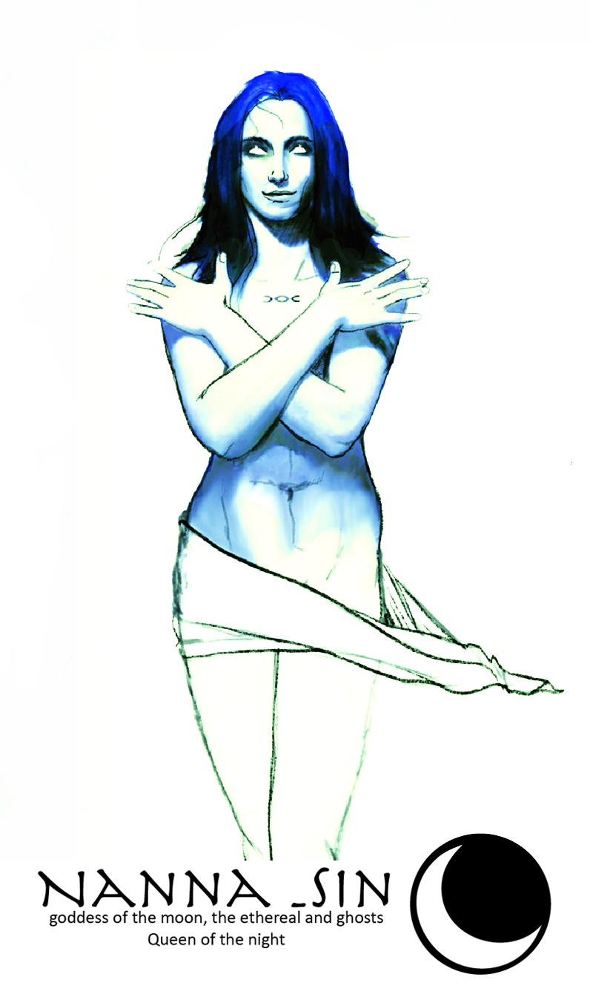
Goddess of the Moon, the Ethereal, and Ghosts, Queen of the Night Also known as Luna, Selenaia (Elven), Máni (Dwarven), Freya (Northern) Patron Goddess of Sunndi
Holy Symbol: The Moon
Month: October
Color: Pale Blue
Demigoddess: Bebhionn
Nanna-Sin spends much of her time in the Ethereal Plane. She is worshiped by witches and served by ghosts. She is the patron goddess of the people of Sunndi, who believe that Antru has forsaken them. Like the cycles of the moon, Nanna-Sin has many changing moods and natures. Her faithful, coming from many walks of life, view her in countless different ways, and she reflects this. Sometimes she is enthusiastic, vivacious, joyous, and majestic, given to action and dance. At other times, she is subdued, motherly, and almost poetic or tranquil and embracing. Then she is remote and weighed down by sadness at defeats and tragedies, even those that happened long, long ago. Finally, she can be quite insane, aggressive, and fierce, with little mercy for her enemies. The clerics of Nanna-Sin paint their faces white and adorn simple pale blue robes. The High Priestess of the Church of Nanna-Sin is Chantress Isadoris of The City of Bozisha-Dar in Sunndi. Nanna-Sin’s avatar is Bebhionn, demi-goddess of love.
Nergal
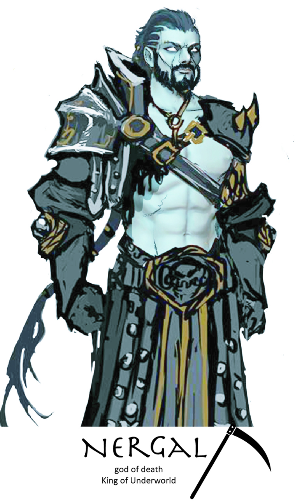
God of Death, King of Underworld Also known as Serapis (Northern), Anubis (Sunndi), Erebos, Nergal, Naralis (Elven) Worshiped in the Empire of Ix.
Holy Symbol: The Sickle
Month: January
Color: Black
Demigod: Ixalor, demigod of evil
Nergal is the patron deity of those who seek the greatest evil for their own enjoyment or gain. Most common folk do not worship or propitiate him, although they fear him greatly. It is believed that any form of appeasement will merely draw his attention, something that is at all costs to be avoided by the sensible. Nergal seems, in fact, to draw power from the very avoidance of his name. Some of the peasants of OnceWas do propitiate Nergal with minor rites, begging safe passage for the souls of the dead. Among the Barbarians of StoneHold, Nergal is considered to also be the god of winter. Nergal’s clerics are feared throughout the lands as cold, calculating murderers. They are secretive and often solitary. When not in disguise, they dress in all black. Those who would become priests of Nergal must undergo an arduous initiation that climaxes in being buried alive for a time. Nergal’s temples are hidden and usually subterranean except in the most evil lands, as befits the god of death and the underworld. Nergal’s faithful believe they will be rewarded for acts of murder, for every living thing is an abomination in the eyes of the Reaper. The Dark Abbot of the Cathedral of Nergal is Calliguri the Old of Dorakka in the Empire of Ix. Nergal’s avatar is Emperor Ixalor, demi-god of chaos and evil. Ixalor has been imprisoned in the Far Realm for 300 years.
Siduri
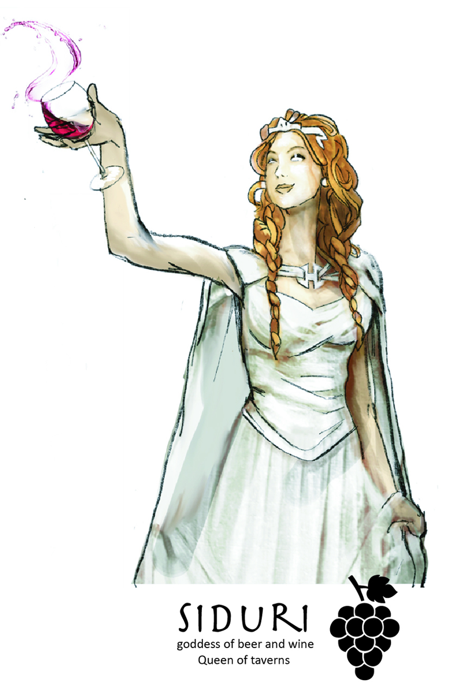
Goddess of Beer and Wine, Queen of Taverns Also known as Ninkasi, Maenad (Northern), Mainades, Aegiri Patron Goddess of the Pomarj
Month: Novemeber
Color: Purple
Demigoddess: Morrigan, demi goddess of luck and thieves
Siduri is the deity of festhalls, hedonism, and revelry. She is a chaotic being, passionate and willful and spends much of her time in Oncewas in disguise. The clerics of Siduri wear copper headpieces and wear festive purple clothes. The ArchPriestess of the Sanctuary of Siduri is Caiaphas of the city of High Port in the Pomarj. Siduri’s avatar is Morrigan, demi-goddess of luck and thieves and the Raven Queen.
Demigods
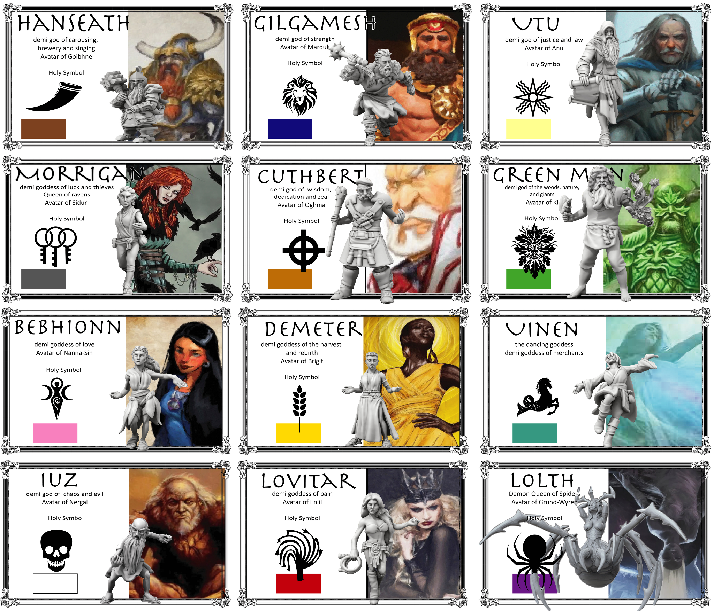
Bebhionn
Demigoddess of Love, Avatar of Nanna-Sin
Bebhionn is a radiant and compassionate figure, often depicted with a gentle smile and an aura of serene beauty. She embodies the ideals of love, compassion, and maternal care. Bebhionn is the guide for those who seek to find and nurture true love and to mend broken hearts.
Worshipers and Clergy: Lovers, poets, and those who seek to heal emotional wounds honor Bebhionn. Her clergy perform ceremonies to bless unions and provide counsel to those in need of emotional guidance. They wear pale blue robes adorned with heart symbols.
Holy Symbol: Abstract representation of the female form
Cuthbert
Demigod of Wisdom, Dedication, and Zeal, Avatar of Curumo
Cuthbert appears as a wise and stern figure, often depicted with a book in one hand and a staff in the other. He embodies the virtues of knowledge, dedication, and unwavering determination. Cuthbert inspires his followers to pursue wisdom and to uphold justice and order.
Worshipers and Clergy: Scholars, judges, and those who seek guidance and enlightenment honor Cuthbert. His priests are known for their wisdom and sound judgment. They wear robes of brass and carry scrolls and tomes.
Holy Symbol: A circle bisected by a vertical and a hortizontal line
Demeter
Demigoddess of the Harvest and Rebirth, Avatar of Brigit
Demeter is a nurturing figure associated with the cycle of life and the changing seasons. She is often depicted with sheaves of wheat and a cornucopia, symbolizing abundance and the bounty of the earth. As the demigoddess of the harvest, Demeter ensures the fertility of the land and the prosperity of its people. She is also linked to the mysteries of life and death, embodying the power of rebirth and renewal.
Worshipers and Clergy: Farmers, gardeners, and those involved in agriculture revere Demeter. Her clergy performs rituals to bless the crops and ensure a bountiful harvest. They wear green robes and garlands of flowers during ceremonies.
Holy Symbol: A sheaf of wheat
Gilgamesh
Demigod of Strength, Avatar of Gaoth
Gilgamesh is a legendary hero known for his unparalleled strength and bravery. Often depicted as a towering figure with a lion by his side, he embodies the ideals of physical power and heroic feats. Gilgamesh inspires warriors and athletes, urging them to strive for greatness and overcome any challenge.
Worshipers and Clergy: Warriors, athletes, and those who seek physical prowess honor Gilgamesh. His priests are often found training fighters and organizing competitions. They wear arm bands and medallions engraved with his symbol.
Holy Symbol: A head of a Lion
Green Man
Demigod of Woods, Nature, and Giants, Avatar of Ki
The Green Man is a primal deity who represents the raw and untamed aspects of nature. He is depicted with a face made of leaves and vines, embodying the spirit of the forest and the cycles of growth and decay. The Green Man is also revered by giants, who see him as a protector of the natural world.
Worshipers and Clergy: Druids, rangers, and those who dwell in the wilderness worship the Green Man. His clergy live in harmony with nature, performing rituals to honor the changing seasons. They wear leaf-green tunics and masks made of bark and leaves.
Holy Symbol: A face made of leaves
Hanseath
Demigod of War and Beer, Avatar of Goibhnie
Hanseath is a boisterous and jolly figure, often depicted holding a frothing mug of beer in one hand and a battle axe in the other. He is the patron of warriors who enjoy revelry and camaraderie after the heat of battle. Hanseath embodies the joy of victory and the pleasures of life.
Worshipers and Clergy: Dwarves, soldiers, and brewers hold Hanseath in high regard. His priests are known for their hearty feasts and robust drinking songs. They wear red and gold tabards and often sport impressive beards.
Holy Symbol: A mug of beer
Ixalor
Demigod of Chaos and Evil, Avatar of Nergal
Ixalor is a malevolent and fearsome deity, often depicted with a twisted and terrifying visage. He embodies chaos, evil, and the dark forces that seek to disrupt the natural order. Ixalor is the patron of those who thrive on anarchy and destruction.
Worshipers and Clergy: Necromancers, warlocks, and those who revel in chaos and destruction honor Ixalor. His clergy conducts dark rituals and ceremonies that invoke fear and dread. They wear black robes and carry symbols of chaos.
Holy Symbol: A skull
Lolth
Demigoddess of Spiders, Avatar of Grund-Wyren
Lolth is a sinister and manipulative figure, often depicted as a dark and beautiful spider queen. She embodies cunning, ambition, and the allure of darkness. Lolth is the patron of spiders, drow, and those who seek power through deceit and treachery.
Worshipers and Clergy: Drow, assassins, and those who plot in the shadows honor Lolth. Her clergy perform rituals to summon spiders and weave dark magic. They wear black robes adorned with spider motifs.
Holy Symbol: A black spider
Lovitar
Demigoddess of Love and Pain, Avatar of Enlil
Lovitar is a complex and dual-natured deity, often depicted with a whip in one hand and a rose in the other. She embodies the interconnectedness of love and pain, pleasure and suffering. Lovitar teaches that true strength and understanding come from experiencing both joy and sorrow.
Worshipers and Clergy: Those who have suffered great loss or those who seek to understand the depths of the human heart worship Lovitar. Her clergy practices rituals that explore the balance between pain and pleasure. They wear red and black robes and carry whips adorned with roses.
Holy Symbol: A cat of nine tails
Morrigan
Demigoddess of Luck and Thieves, Avatar of Siduri
Morrigan is a cunning and resourceful figure, often depicted with a raven on her shoulder. She embodies luck, fortune, and the art of thievery. Morrigan is the patron of those who rely on wit and dexterity to achieve their goals.
Worshipers and Clergy: Thieves, gamblers, and those who live by their wits honor Morrigan. Her clergy conducts secretive rituals to invoke her favor and ensure their success in endeavors. They wear dark cloaks and carry talismans of ravens.
Holy Symbol: Three keys
Uinen
Demigoddess of Merchants, Avatar of Enki
Uinen is a graceful and serene deity, often depicted with a flowing gown and a ship at her side. She oversees trade and commerce, ensuring fair dealings and prosperous voyages. Uinen is the patron of merchants and sailors, guiding them safely across the seas.
Worshipers and Clergy: Merchants, sailors, and traders worship Uinen. Her clergy bless ships and trade caravans, and offer prayers for successful business ventures. They wear blue robes and carry silver coins as talismans.
Holy Symbol: A Horse with the tail of a fish
Uta
Demigod of Art and Music, Avatar of Sarasvati
Uta is a figure of creativity and inspiration, often depicted with a lyre or a paintbrush in hand. He embodies the beauty of art and the power of music to move the soul. Uta inspires artists and musicians to express themselves and share their gifts with the world.
Worshipers and Clergy: Artists, musicians, and those who appreciate beauty and creativity honor Uta. His clergy organize festivals and performances to celebrate art and music. They wear colorful garments and carry instruments or paintbrushes.
Holy Symbol: Abstract image of a star over field of crossed wavy lines
Demon Lords

Additional to the twelve gods and tweleve demigods, there are twelve Demon Lords.
Blibdoolpoolp
the Sea Mother, Demon of Madness and Revenge
Blibdoolpoolp is a fearsome sea deity worshiped by kuo-toa. She embodies the chaotic and destructive nature of the ocean, and her followers often seek revenge on those who wrong them. Her presence drives mortals to madness, and she delights in the insanity and chaos that ensues.
Caizel
the Seductress, Demon of Lust
Caizel is the epitome of temptation and carnal desire. She appears as an irresistible figure, capable of bending the wills of even the most steadfast individuals. Her influence leads to moral corruption and the destruction of relationships and societies through uncontrollable lust.
Demogorgon
the Prince of Demons, Demon of Greed
Demogorgon is a two-headed monstrosity that represents the insatiable desire for power and wealth. His dual nature symbolizes the internal conflict within all who seek to dominate others. He thrives on the chaos caused by greed and the ruthless pursuit of ambition.
Graz’zt
the Dark Prince, Demon of Pride and Indulgence
Graz’zt is a seductive and cunning demon lord known for his vanity and indulgence in pleasures. He rules over a vast domain filled with decadence and vice. His charm and intelligence make him a formidable adversary, as he manipulates others to satisfy his own prideful desires.
Lupercio
the Baron of Sloth
Lupercio embodies laziness and apathy. His influence causes mortals to succumb to lethargy and neglect their duties and ambitions. He feeds on the stagnation and decay that follow in the wake of inactivity and indifference.
Malar
the Beastlord, Bestial Demonic Spirit of Lycanthropy
Malar is a primal and savage demon lord worshiped by those who embrace their inner beast. He is the patron of lycanthropes and revels in the hunt and the thrill of the kill. His followers are ferocious and uncontrollable, spreading fear and bloodshed wherever they go.
Nimlurun
the Rat Lord, Demon of Filth and Squalor
Nimlurun is the lord of decay and vermin. He thrives in places of extreme squalor and filth, commanding swarms of rats and other pests. His presence brings disease and pestilence, and his followers revel in the degradation and collapse of civilized life.
Thralhavoc
the Shadowmaster, Demon of Envy Thralhavoc lurks in the darkness, whispering envious thoughts into the minds of mortals. He sows discord by exploiting the jealousy and resentment people feel towards one another. His influence leads to betrayal and conflict as individuals strive to take what others possess.
Turaglas
the Ebon Maw, Demon of Gluttony Turaglas is an insatiable entity, always consuming and never satisfied. He represents the destructive force of gluttony, driving his followers to gorge themselves on food, drink, and resources until there is nothing left. His voracious appetite leads to ruin and desolation.
Explictica Defilus
the Reptile God “the Clear Ruin”, Demon of Desecration and Disease
Explictica Defilus is a vile serpent deity associated with corruption and plague. She spreads disease and defiles sacred places, leaving a trail of death and decay in her wake. Her worshipers practice dark rituals to invoke her favor, bringing ruin to the lands they infest.
Yeenoghu
the Prince of Gnolls, Demon of Wrath
Yeenoghu is the savage and bloodthirsty demon lord of the gnolls. He personifies wrath and unrestrained violence, leading his gnoll followers on brutal raids and massacres. His insatiable rage fuels their berserk fury, making them terrifying opponents on the battlefield.
Zuggtmoy
the Queen of Fungi, Demon of Rot and Decay
Zuggtmoy is the mistress of mold and fungi, ruling over a realm of perpetual decay. She embodies the slow, creeping destruction of rot, spreading her spores to corrupt and consume all living matter. Her influence leads to the degradation of both nature and civilization.